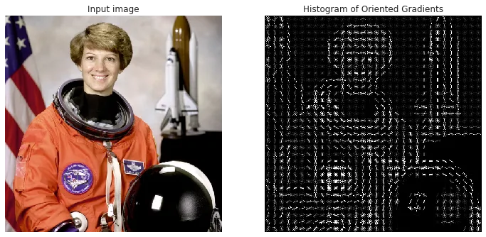
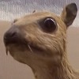

# Object Detection ## **Design of Autonomous Systems** ### csci 6907/4907-Section 86 ### Prof. **Sibin Mohan** --- autonomous vehicle uses sensory input devices (cameras, radar and lasers) --- autonomous vehicle uses sensory input devices (cameras, radar and lasers) <br> <br> **how** does it actually "perceive"? --- perception involves not just identifying that an object exists, but also, --- perception involves not just identifying that an object exists, but also, ||| |:-----|:------| |object **classification**| **what** is it?| --- perception involves not just identifying that an object exists, but also, ||| |:-----|:------| |object **classification**| **what** is it?| |object **localization** | **where** is it?| || --- consider a **camera**, --- consider a **camera**, |||| |:-----|:------|:------| |object **classification**| **what** is it?|**recognizing** objects <br>(cars, traffic lights, pedestrians)| |object **localization** | **where** is it?|| || --- consider a **camera**, |||| |:-----|:------|:------| |object **classification**| **what** is it?|**recognizing** objects <br>(cars, traffic lights, pedestrians)| |object **localization** | **where** is it?|generating **bounding boxes**| || --- consider a **camera**, <img src="img/object/camera_bounding_boxes.gif" width="1400"> --- multiple **classes** of object detection and localization methods, 1. classical [**computer vision** methods](#computer-vision-methods) 2. [**deep-learning** based methods](#deep-learning-methods) --- ## Computer Vision Methods --- ### 1. [Histogram of Gradient Objects](https://medium.com/analytics-vidhya/a-gentle-introduction-into-the-histogram-of-oriented-gradients-fdee9ed8f2aa) (HOG) --- ### 1. Histogram of Gradient Objects (HOG) - mainly used for face and image detection --- ### 1. Histogram of Gradient Objects (HOG) - mainly used for face and image detection - image ($width \times height \times channels$) → feature vector, length $n$ - $n$ → chosen by user Note: - convert the image to a feature vector --- ### 1. Histogram of Gradient Objects (HOG) - mainly used for face and image detection - image ($width \times height \times channels$) → feature vector, length $n$ - $n$ → chosen by user - **histogram of gradients** → used as image "features" --- HOG example  --- gradients are **important** --- gradients are **important** - check for **edges** and **corners** in image - through **regions of intensity changes** --- gradients are **important** - check for **edges** and **corners** in image - through **regions of intensity changes** - often pack much more information than flat regions --- ### 2. [Scale Invariant Feature Transform](https://medium.com/@deepanshut041/introduction-to-sift-scale-invariant-feature-transform-65d7f3a72d40) (SIFT) --- ### 2. Scale Invariant Feature Transform (SIFT) - extracting **distinctive invariant features** from images --- ### 2. Scale Invariant Feature Transform (SIFT) - extracting **distinctive invariant features** from images - **reliable matching** → between different **views** of an object or scene --- ### 2. Scale Invariant Feature Transform (SIFT) - extracting **distinctive invariant features** from images - **reliable matching** → between different **views** of an object or scene - finds **keypoints** in an image that do not change --- finds **keypoints** based on, - scale - rotation - illumination --- SIFT example --- - image recognition → matches individual features to **database** - database → known objects --- - image recognition → matches individual features to **database** - database → known objects - using a fast nearest-neighbor algorithm --- SIFT → robustly identify objects --- SIFT → robustly identify objects while achieving **near real-time** performance --- ### 3. [Viola-Jones Detector](https://www.mygreatlearning.com/blog/viola-jones-algorithm/) --- ### 3. [Viola-Jones Detector] - used to accurately identify and analyze **human faces** --- ### 3. [Viola-Jones Detector] - used to accurately identify and analyze **human faces** - mainly works with grayscale images --- ### 3. [Viola-Jones Detector] - given an image → looks at many smaller subregions --- ### 3. [Viola-Jones Detector] - given an image → looks at many smaller subregions - tries to find a face → looking for **specific features in each subregion** --- ### 3. [Viola-Jones Detector] - given an image → looks at many smaller subregions - tries to find a face → looking for **specific features in each subregion** - check many different positions and scales - image can contain **many faces** of **various sizes** --- uses **Haar-like features** to detect faces > [Haar wavelets](https://en.wikipedia.org/wiki/Haar_wavelet) → sequence of rescaled “square-shaped” functions which together form a wavelet family or basis --- Viola-Jones example <img src="img/object/viola_jones.webp" width="1400"> --- [textbook](https://autonomy-course.github.io/textbook/autonomy-textbook.html#computer-vision-methods) has links to the actual papers --- ## Deep-Learning Methods --- ## Deep-Learning Methods use **neural networks** → classification, regression, representation --- ### neural networks --- ### neural networks inspiration from biological neuroscience --- ### neural networks inspiration from biological neuroscience - stacking artificial "neurons" into **layers** --- ### neural networks inspiration from biological neuroscience - stacking artificial "neurons" into **layers** - "training" them to process data --- ### neural networks inspiration from biological neuroscience - stacking artificial neurons into **layers** - "training" them to process data <br> <br> "deep" → multiple layers (<scb>3</scb> to <scb>1000s</scb>) in the network --- ## deep learning architecture example <img src="img/object/deep_learning.png" width="1300"> --- ### Deep-Learning Methods | **Object Detection** --- ### Deep-Learning Methods | **Object Detection** [convolutional neural networks](https://medium.com/@kattarajesh2001/convolutional-neural-networks-in-depth-c2fb81ebc2b2) (CNNs) for object detection --- ### Convolutional Neural Networks (CNNs) <img src="img/object/cnn_intro.png" width="1300"> --- ### Convolutional Neural Networks (CNNs) class of deep learning neural networks --- ### Convolutional Neural Networks (CNNs) class of deep learning neural networks learns "features"` → "filter" (or kernel) optimization --- ### Convolutional Neural Networks (CNNs) **[convolution operations](https://en.wikipedia.org/wiki/Convolution)** at runtime --- ### Convolutional Neural Networks (CNNs) **[convolution operations](https://en.wikipedia.org/wiki/Convolution)** at runtime used in object detection → **classify** images from the camera --- **convolution operations** at runtime --- **convolution operations** at runtime operation on two functions, $f$ and $g$, to produce a third function --- **convolution operations** at runtime operation on two functions, $f$ and $g$, to produce a third function --- <img src="img/object/equations/pngs/equations-1.png" width="1500"> --- <img src="img/object/equations/pngs/equations-1.png" width="1500"> **integral of product** → after one is **reflected** about y-axis and shifted --- <!-- .slide: data-background="white" --> [visual examples](https://en.wikipedia.org/wiki/Convolution) of convolutions <br> <img src="img/object/convolution.1.gif" height="300" width="900"> <img src="img/object/convolution.2.gif" height="300" width="900"> --- we are really interested in **discrete** convolutions --- ### discrete convolutions --- ### discrete convolutions (complex-valued) functions, $f$ and $g$ --- ### discrete convolutions (complex-valued) functions, $f$ and $g$ defined on the set $\mathbb{Z}$ of integers --- ### discrete convolutions (complex-valued) functions, $f$ and $g$ defined on the set $\mathbb{Z}$ of integers <br> $$ (f * g)[n]=\sum_{m=-\infty}^{\infty} f[m] g[n-m] $$ --- <!-- .slide: data-background="white" --> at a high level this can be visualized as, <img src="img/object/discrete_convolution.gif" width="900"> --- ### discrete convolutions - flipping one sequence --- ### discrete convolutions - flipping one sequence - shifting it across another --- ### discrete convolutions - flipping one sequence - shifting it across another - multiplying corresponding elements --- ### discrete convolutions - flipping one sequence - shifting it across another - multiplying corresponding elements - summing up the results over the range of overlap --- convolution **blends two functions** --- convolution **blends two functions** - **creates a third** function --- convolution **blends two functions** - **creates a third** function - represents how one function **modifies** the other --- ### convolutions applied to CNNs how **kernels** (that act as **filters**) → alter or transform input data --- ### **kernel** (aka "convolution matrix" or "mask") --- ### **kernel** (aka "convolution matrix" or "mask") a small matrix used for certain operations --- ### kernel | **examples** |operation|kernel/matrix| result| |:--------|:-------------:|:-------:| | identity | <font size="5">$\left[\begin{array}{lll}0 & 0 & 0 \newline 0 & 1 & 0 \newline 0 & 0 & 0\end{array}\right]$</font> | | --- ### kernel | **examples** |operation|kernel/matrix| result| |:--------|:-------------:|:-------:| | identity | <font size="5">$\left[\begin{array}{lll}0 & 0 & 0 \newline 0 & 1 & 0 \newline 0 & 0 & 0\end{array}\right]$</font> | | | ridge/edge detection| <font size="5">$\left[\begin{array}{rrr} -1 & -1 & -1 \newline -1 & 8 & -1 \newline -1 & -1 & -1\end{array}\right]$</font> | | --- ### kernel | **examples** |operation|kernel/matrix| result| |:--------|:-------------:|:-------:| | identity | <font size="5">$\left[\begin{array}{lll}0 & 0 & 0 \newline 0 & 1 & 0 \newline 0 & 0 & 0\end{array}\right]$</font> | | | ridge/edge detection| <font size="5">$\left[\begin{array}{rrr} -1 & -1 & -1 \newline -1 & 8 & -1 \newline -1 & -1 & -1\end{array}\right]$</font> | | | sharpen| <font size="5">$\left[\begin{array}{rrr}-1 & -1 & -1 \newline -1 & 8 & -1 \newline -1 & -1 & -1\end{array}\right]$</font> | <img src="img/object/kernel.3.png">| --- ### kernel | **examples** [contd.] |operation|kernel/matrix| result| |:--------|:-------------:|:-------:| | gaussian blur| <font size="5">$\frac{1}{256}\left[\begin{array}{ccccc}1 & 4 & 6 & 4 & 1 \newline4 & 16 & 24 & 16 & 4 \newline6 & 24 & 36 & 24 & 6 \newline4 & 16 & 24 & 16 & 4 \newline1 & 4 & 6 & 4 & 1 \end{array}\right]$</font> | <img src="img/object/kernel.4.png">| --- ### kernel | **examples** [contd.] |operation|kernel/matrix| result| |:--------|:-------------:|:-------:| | gaussian blur| <font size="5">$\frac{1}{256}\left[\begin{array}{ccccc}1 & 4 & 6 & 4 & 1 \newline4 & 16 & 24 & 16 & 4 \newline6 & 24 & 36 & 24 & 6 \newline4 & 16 & 24 & 16 & 4 \newline1 & 4 & 6 & 4 & 1 \end{array}\right]$</font> | <img src="img/object/kernel.4.png">| | unsharp masking| <font size="5">$\frac{-1}{256}\left[\begin{array}{ccccc}1 & 4 & 6 & 4 & 1 \newline4 & 16 & 24 & 16 & 4 \newline6 & 24 & -476 & 24 & 6 \newline4 & 16 & 24 & 16 & 4 \newline1 & 4 & 6 & 4 & 1\end{array}\right]$</font> | <img src="img/object/kernel.5.png">| || --- in its simplest form → convolution is defined as, > the process of adding each element of the image to its local neighbors, weighted by the kernel --- values of given pixel in output image, --- values of given pixel in output image, **multiplying each kernel value by corresponding input image pixel values** --- ### convolution | **pseudocode** ```[1-2|4|6-7|9|10-11|14] for each image row in input image: for each pixel in image row: set accumulator to zero for each kernel row in kernel: for each element in kernel row: if element position corresponding* to pixel position multiply element value corresponding* to pixel value add result to accumulator endif set output image pixel to accumulator ``` --- **general** form of a matrix convolution --- **general** form of a matrix convolution $$ \left[\begin{array}{cccc} x_{11} & x_{12} & \cdots & x_{1 n} \newline x_{21} & x_{22} & \cdots & x_{2 n} \newline \vdots & \vdots & \ddots & \vdots \newline x_{m 1} & x_{m 2} & \cdots & x_{m n} \end{array}\right] *\left[\begin{array}{cccc} y_{11} & y_{12} & \cdots & y_{1 n} \newline y_{21} & y_{22} & \cdots & y_{2 n} \newline \vdots & \vdots & \ddots & \vdots \newline y_{m 1} & y_{m 2} & \cdots & y_{m n} \end{array}\right] $$ --- **general** form of a matrix convolution <font size="11"> $$ \left[\begin{array}{cccc} x_{11} & x_{12} & \cdots & x_{1 n} \newline x_{21} & x_{22} & \cdots & x_{2 n} \newline \vdots & \vdots & \ddots & \vdots \newline x_{m 1} & x_{m 2} & \cdots & x_{m n} \end{array}\right] *\left[\begin{array}{cccc} y_{11} & y_{12} & \cdots & y_{1 n} \newline y_{21} & y_{22} & \cdots & y_{2 n} \newline \vdots & \vdots & \ddots & \vdots \newline y_{m 1} & y_{m 2} & \cdots & y_{m n} \end{array}\right]=\sum_{i=0}^{m-1} \sum_{j=0}^{n-1} x_{(m-i)(n-j)} y_{(1+i)} $$ </font> --- when specific kernel is applied to an image, --- when specific kernel is applied to an image, - it **modifies or transforms the image** --- when specific kernel is applied to an image, - it **modifies or transforms the image** - highlights or emphasizes → feature that kernel is specialized to detect --- when specific kernel is applied to an image, - it **modifies or transforms the image** - highlights or emphasizes → feature that kernel is specialized to detect - creates a **new representation** of original image --- when specific kernel is applied to an image, - it **modifies or transforms the image** - highlights or emphasizes → feature that kernel is specialized to detect - creates a **new representation** of original image - focusing on specific feature → encoded by applied kernel --- kernels come in various shapes <img src="img/object/kernel.6.png" width="1300"> --- ### CNNs and kernels --- ### CNNs and kernels CNNs → **do not hand code** kernels to extract features --- ### CNNs and kernels CNNs → **do not hand code** kernels to extract features neural network **learns kernels** → extract different features --- **which** kernel to learn? --- **which** kernel to learn? up to the model! --- **which** kernel to learn? up to the model! <br> <br> whatever feature it wants to extract → CNN will **learn** the kernel --- ### "learned" kernels --- ### "learned" kernels - act as specialized filters that **modify input** --- ### "learned" kernels - act as specialized filters that **modify input** - highlighting specific patterns or structures --- ### "learned" kernels - act as specialized filters that **modify input** - highlighting specific patterns or structures - enabling network → learn and discern various features --- ### "learned" kernels - act as specialized filters that **modify input** - highlighting specific patterns or structures - enabling network → learn and discern various features essential for → image recognition, object detection, _etc._ --- example: consider a small patch of image of a car <img src="img/object/car.1.png" width="1100"> --- **three color channels** (R, G, B) <img src="img/object/car.rgb.png" height="700"> --- s consider a **grayscale** image first (for simplicity): <img src="img/object/car.2.png" height="900"> --- **one version** of convolution <img src="img/object/car.grayscale.1.png" width="1300"> --- <!-- .slide: data-background="white" --> If we run it forward, this is what the result looks like: --- <div class="multicolumn"> <div style="vertical-align: text-top;"> <br> <br> <br> <br> <br> but...we deal with **color** images and **three** channels! </div> <div> <img src="img/object/pencils.jpg" height="1000"> </div> </div> --- we have to deal with, <img src="img/object/car.rgb.png" width="1300"> --- solution is simple...apply kernel to **each** channel! --- <!-- .slide: data-background="white" --> solution is simple...apply kernel to **each** channel! <img src="img/object/convolution.0.gif" width="1400"> --- **combine**$^+$ them → **single output value** for that position --- **combine**$^+$ them → **single output value** for that position (+ usually **summed up**) --- <!-- .slide: data-background="white" --> **combine**$^+$ them → **single output value** for that position (+ usually **summed up**) <img src="img/object/car.rgb_output.gif" width="1300"> Note: The "[bias](https://www.turing.com/kb/necessity-of-bias-in-neural-networks#)" helps in shifting the activation function and influences the feature maps’ outputs. This is a **constant** that is added to the product of features and weights. It is used to **offset the result**. It helps the models to shift the activation function towards the positive or negative side. ---